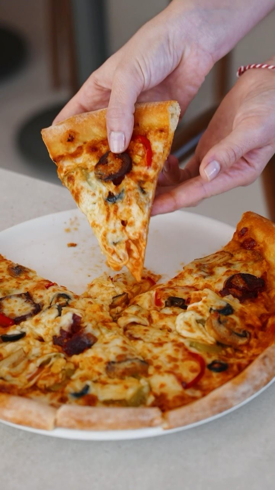
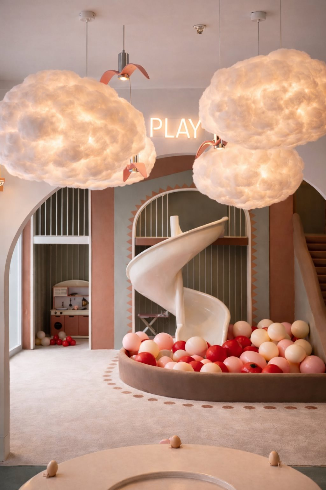
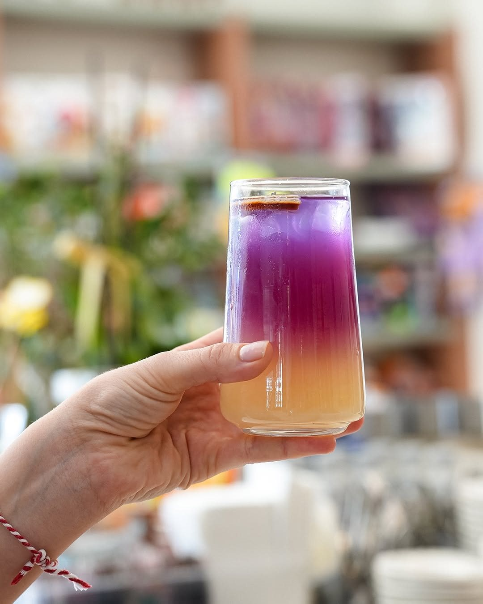
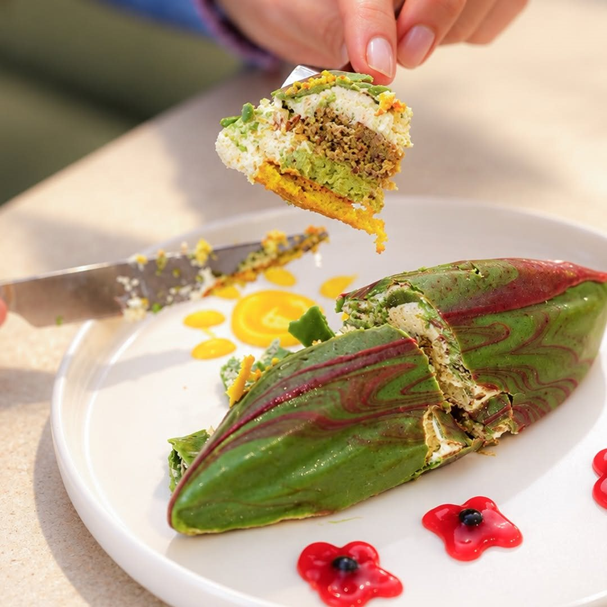
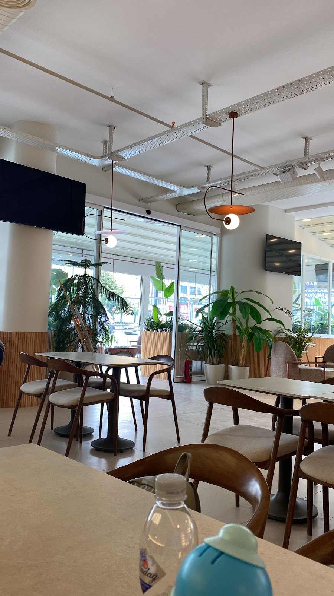

Google yorumu ★★★★★
“Mekanın iç tasarımı şık ve düzenli. Ailecek ve arkadaşlarımızla gitme şansı bulduk ve çok beğendik.”Fatma Y.Yorumun tamamı
Lotus İstanbul, Beylikdüzü
Kahveniz, sohbetiniz ve çocukların neşesi.
Artly’de aynı masanın etrafında buluşalım.



Sofranın güzel tarafı
Bir dilim pizza, kahvenin yanına bir tatlı ya da gününüze renk katacak bir içecek. Artly’de mola biraz da masanın etrafında geçen zaman demek.


Büyükler için mola, küçükler için oyun.
Çocukların oyun alanı, büyüklerin kahve molası. Artly, ailece bir arada vakit geçirmeyi sevenler için tasarlandı.
Yaş aralığı, oyun alanı ücreti, seans düzeni ve eşlik koşulları için ziyaret öncesinde işletmeden bilgi alabilirsiniz.
Düşündüğünüz tarihi ve kişi sayısını işletmeyle paylaşarak doğum günü seçeneklerini, uygunluğu ve ücretleri öğrenebilirsiniz.
Yumuşak renkler, ferah masalar ve ailece uzayan sohbetler. Lotus İstanbul’da sizi bekliyoruz.
Google yorumları
Google yorumu ★★★★★
“Mekanın iç tasarımı şık ve düzenli. Ailecek ve arkadaşlarımızla gitme şansı bulduk ve çok beğendik.”Fatma Y.Yorumun tamamı
Google yorumu ★★★★★
“Her şey çok güzeldi çok teşekkür ederiz her şey için, çocuklar için çok güzel bir yer”Behrouz İ.Yorumun tamamı
Google yorumu ★★★★★
“Mekan özellikle çocuklu aileler için çok uygun. Yiyecek ve içecekleri çok başarılı.”Yıldırım P.Yorumun tamamı
Google yorumlarından kısa alıntılar. Puan ve yorum sayısı 2 Kasım 2026 tarihinde kontrol edilmiştir.
09.00 – 23.30
Oyun alanının kullanım saatleri ve özel günlerdeki değişiklikler için işletmeden bilgi alabilirsiniz.